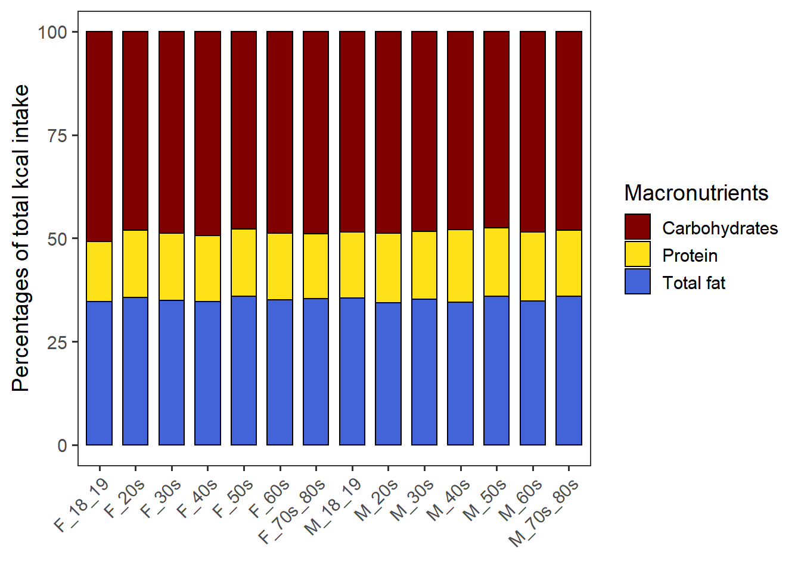
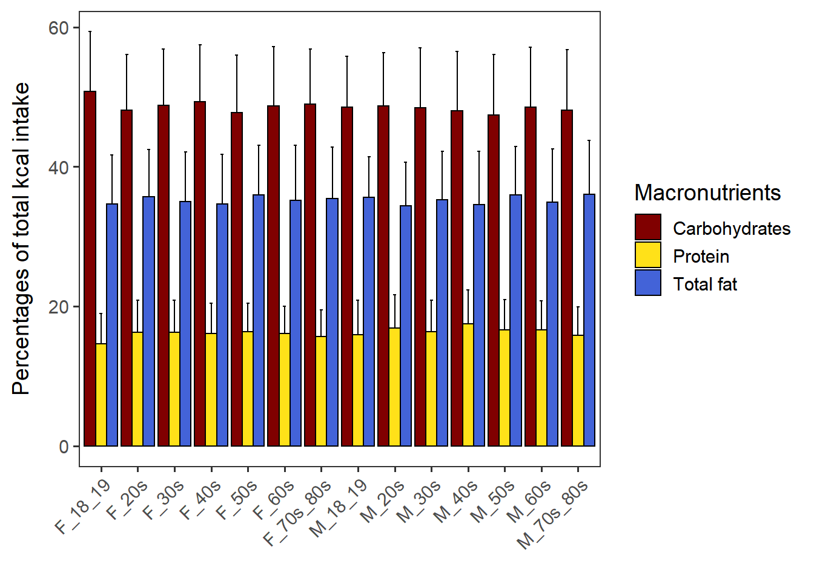
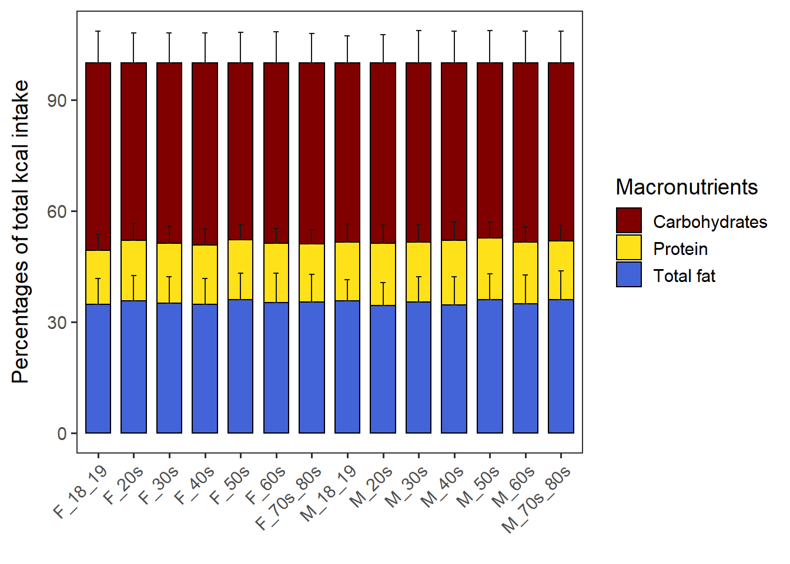
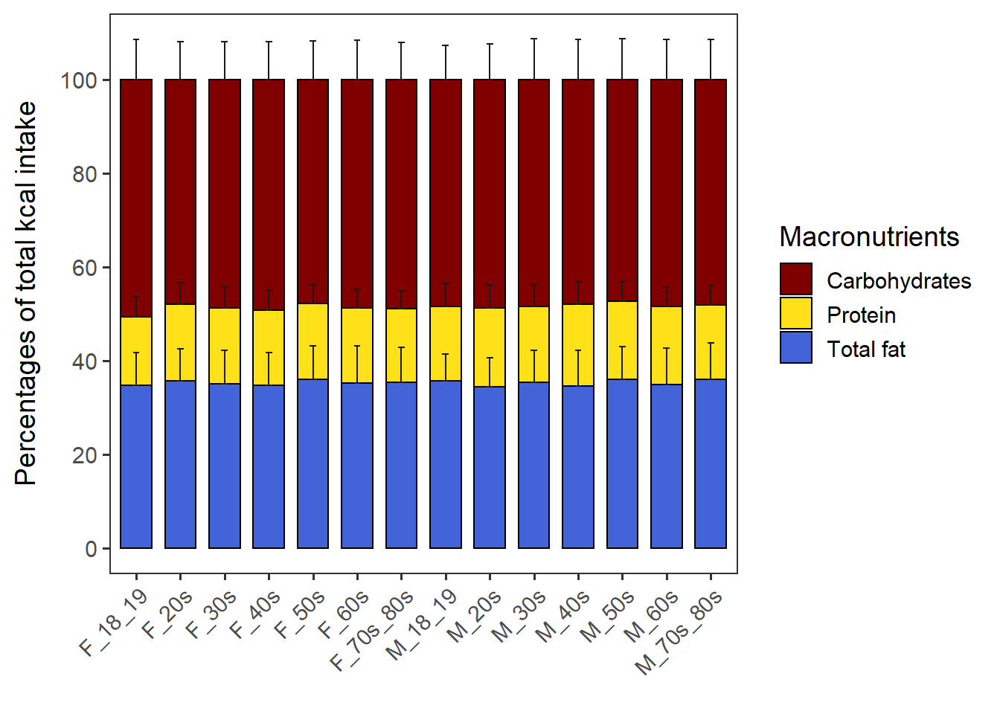

Name the path to DietR directory where input files are pulled.
main_wd <- "~/GitHub/DietR"Load the necessary functions.
source("lib/specify_data_dir.R")
source("lib/ggplot2themes.R")
source("lib/percent_kcal.R")Call color palette.
distinct100colors <- readRDS("lib/distinct100colors.rda")You can come back to the main directory by:
setwd(main_wd)Specify the directory where the data is.
SpecifyDataDirectory(directory.name= "eg_data/NHANES/")Load the totals with demographic data.
totals <- read.table("Total_D12_FC_QC_mean_QC_d.txt", sep = "\t", header = T)Totals has the mean dietary intake of two days for each participant and also their metadata. We are going to use the following columns in totals:
Add gender and age_groups to totals. The output is named “totals_out”.
AddGenderAgeGroups(input=totals, age.col="RIDAGEYR", gender.col="RIAGENDR")Ensure grouping has been done correctly.
head(totals_out[, c("RIAGENDR", "Gender", "RIDAGEYR", "AgeGroup", "Gender_Age")])## RIAGENDR Gender RIDAGEYR AgeGroup Gender_Age
## 1 1 M 62 60s M_60s
## 2 1 M 53 50s M_50s
## 3 1 M 78 70s_80s M_70s_80s
## 4 2 F 42 40s F_40s
## 5 2 F 72 70s_80s F_70s_80s
## 6 1 M 22 20s M_20sRename the output as totals to use in the following code.
totals <- totals_outFor NHANES, we will calculate the percentage of calories from each of the three macronutrients in the sum of calories from the three macronutrients. Thus, the percentage of calories from CARB, PROT, and TFAT will add up to 100.
Calculate the %kcal of CARB, PROT, and TFAT for each user and take means by Gender_Age.
CPTpctKcalPerUser_NHANES(inputfn=totals, group='Gender_Age', across='SEQN',
outfn="Total_D12_FC_QC_mean_QC_d_CPT_kcal.txt")Load the output.
CPT_kcal <- read.table("Total_D12_FC_QC_mean_QC_d_CPT_kcal.txt", sep="\t", header=T)CPT_kcal has Group, macronutrient, n, mean, and sd of each group.
head(CPT_kcal)## Group macronutrient n mean sd
## 1 F_18_19 CARB_kcal_pct 95 50.75217 8.581260
## 2 F_20s CARB_kcal_pct 346 48.07248 8.019404
## 3 F_30s CARB_kcal_pct 335 48.75215 8.094193
## 4 F_40s CARB_kcal_pct 383 49.31012 8.107403
## 5 F_50s CARB_kcal_pct 347 47.76785 8.173749
## 6 F_60s CARB_kcal_pct 365 48.73053 8.438459Change the font size if necessary.
This assumes that CPT_kcal has “Group” column.
stacked_wo_SD <- StackedwoSD_NHANES(data= CPT_kcal) + theme(axis.text.x=element_text(size=11)) stacked_wo_SD
Save as a .pdf.
ggsave("Total_D12_FC_QC_mean_QC_d_CPT_kcal_wo_SD.pdf", stacked_wo_SD,
device="pdf", width=6.2, height=4.2, units="in", dpi=300)Change the font size if necessary.
dodgedtypebarchart <- DodgedBarchart_NHANES(data= CPT_kcal) + theme(axis.text.x=element_text(size=11))dodgedtypebarchart
Save as a .pdf.
ggsave("Total_D12_FC_QC_mean_QC_d_CPT_kcal_dodgedtypebarchart.pdf", dodgedtypebarchart,
device="pdf", width=9.0, height=4, units="in", dpi=300)Create a vector that contains all the groups.
groups <- unique(CPT_kcal$Group)Calculate sd_base and sd_forstacked for stacked barchart. Note that this function assumes all groups have CARB, PROT, and TFAT values.
CalcStackedSD_NHANES(input.df= CPT_kcal, out.fn= "Total_D12_FC_QC_mean_QC_d_CPT_kcal_forstacked.txt")Load the saved file that has SD for stacked barchart.
CPT_kcal_forstacked_read <- read.table("Total_D12_FC_QC_mean_QC_d_CPT_kcal_forstacked.txt", sep="\t", header=T)Stacked barchart with SD as error bars.
stacked_with_SD <- StackedWithSD_NHANES(data= CPT_kcal_forstacked_read) + theme(axis.text.x=element_text(size=11))stacked_with_SD
Save as a .pdf.
ggsave("Total_D12_FC_QC_mean_QC_d_CPT_kcal_with_SD.pdf", stacked_with_SD,
device="pdf", width=6.2, height=4.3, units="in", dpi=300)Change the Y axis scale if necessary. Note that if the error bars of Carbohydrates disappear after changing the limits of Y axis, it may be because the error bars are higher than the max Y. Ensure you have enough max Y value to accommodate the error bars.
You can also change the breakpoints of the Y axis.
stacked_with_SD + scale_y_continuous(breaks = c(0, 20, 40, 60, 80, 100))
Come back to the main directory.
setwd(main_wd)